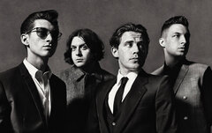
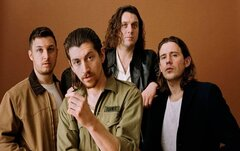

Arctic Monkeys es una banda británica de rock, formada en Sheffield, Reino Unido. El grupo está compuesto por el guitarrista principal y vocalista Alex Turner, el guitarrista Jamie Cook, el baterista Matt Helders, y con Nick O'Malley en el bajo. El bajista original de la banda, Andy Nicholson, dejó el proyecto en 2006 poco después del lanzamiento del álbum debut.  Los Arctic Monkeys fueron considerados como una de las primeras bandas en hacerse conocidas al público gracias a la difusión de sus canciones por Internet, por lo cual se los catalogó como «la banda que pudo haber cambiado el mercado de la música». Esto le valió para que su álbum de estudio debut, Whatever People Say I Am, That's What I Am Not (2006), se convierta en el disco debut británico más vendido en la historia, con más de 300 mil copias vendidas en su primera semana en el mercado. Ganó el premio al Mejor Álbum Británico en los Brit Awards 2007. El segundo álbum de la banda, Favourite Worst Nightmare (2007), contó casi con el mismo éxito, ganando también el premio al Mejor Álbum Británico en los Brit Awards 2008. Luego pasarían a sacar Humbug (2009), un proyecto más experimental, y Suck It and See (2011). La fama mundial de la banda aumentaría gracias al lanzamiento de AM (2013), el quinto disco de la banda, y el que obtendría mayor éxito comercial. AM se convirtió en su segundo álbum en entrar en el Top 10 del Billboard en Estados Unidos, siendo también certificado platino en ese país. En los Brit Awards 2014 la banda consiguió por tercera vez el premio al Mejor Álbum Británico. Su sexto álbum, Tranquility Base Hotel & Casino (2018), se alejó de los sonidos tradicionales de la banda, enfocándose en sonidos más basados en el piano, e incorporando rock psicodélico, space age pop, lounge y glam rock, además de elementos de jazz. Recibió una nominación a Mejor Álbum de Música Alternativa en los Premios Grammys 2019, su segunda en la categoría después de Whatever People Say I Am, That's What I Am Not.  Los Arctic Monkeys vendieron más de 20 millones de copias en todo el mundo, volviéndose una de las bandas de rock indie más exitosas de la historia. La banda se convirtió en el primer grupo independiente (sin ningún contrato con un sello discográfico) en alcanzar el número uno con el lanzamiento de cada uno de sus seis álbumes en el Reino Unido. Los Monkeys ganaron seis Brit Awards, tres por Mejor Banda Británica; un Mercury Prize por Whatever People Say I Am, That's What I Am Not; un Premio Ivor Novello, y 20 NME Awards. Además, consiguieron cinco nominaciones a los Premios Grammy. Tanto Whatever People Say I Am, That's What I Am Not como AM están incluidos en las listas de NME y Rolling Stone de los 500 mejores álbumes de todos los tiempos. A nivel de conciertos, la banda fue cabeza de dos Glastonbury, en 2007 y en 2013, y también participó en la ceremonia de apertura de los Juegos Olímpicos de Londres 2012.